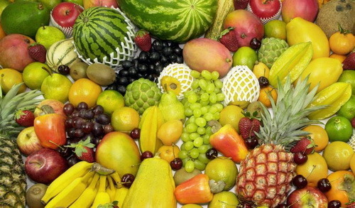
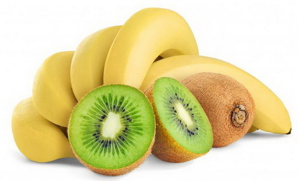
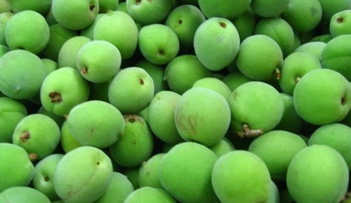
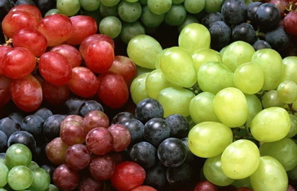
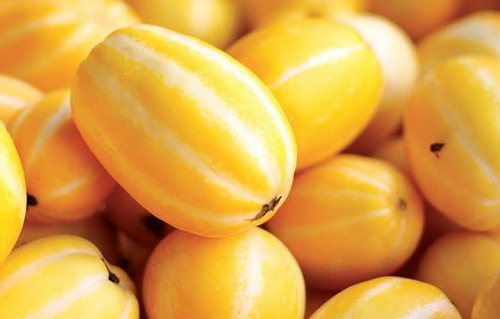
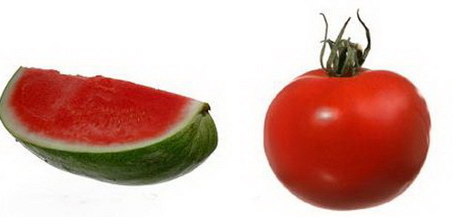
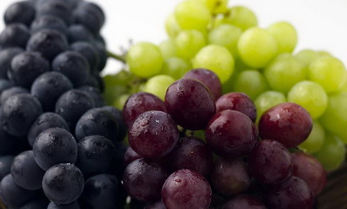
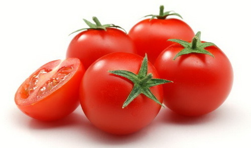

건강하게
과일을 보약같이 먹을 수 있는 12가지 팁
2022.01.21 | comment
- 과일을 보약같이 먹을 수 있는 12가지 팁
- 
-
기본은 깨끗한 세척!
깨끗한 물에 3~5분 정도 담갔다가 흐르는 물에 다시한번 씻으면 됩니다. 포도처럼 송이가 빽빽한 것은 줄기를 잘라 씻어야 내부까지 물이 들어갑니다.
식초와 베이킹파우더, 천연세제를 이용해 씻기도 하지만, 잔류 농약 검사 결과 물로 씻은 것과 효과가 같다고 합니다. -
식사 후 먹어야 효과가 좋습니다.
과일에 많이 들어 있는 비타민 C는 철분이나 칼슘을 흡수시켜주는 역할을 하므로, 식사를 마치고 먹으면 먹는 것이 가장 좋습니다. 그러나 다이어트중이거나 비만인 사람은 식사 전에 먹어야 포만감을 느껴 과식을 방지할 수 있습니다.
-
장이 약한 사람은 아침에 먹습니다.
장이 약하다면 저녁보다는 아침에 먹는 것이 좋습니다. 저녁에 먹는다고 몸에 특별히 나쁜 영향을 미치는 것은 아니나, 과일에는 구연산 같은 유기산이 많이 들어있어 장 점막을 자극할 수 있으므로 조심하는 것이 좋습니다.
-
날로 먹는게 가장 좋습니다.
과일은 깨끗이 씻어 껍질째 먹는 것이 가장 좋습니다. 과일을 갈아서 먹으면 비타민 같은 영양소가 파괴될 가능성이 높아지기 때문입니다. 하지만 갈아서 먹는 것도 장점이 있습니다. 과일을 갈아 먹으면 체내 흡수율이 높아져 소화가 잘 됩니다. 단, 당뇨병 환자나 비만인 사람이 과일을 갈아서 먹으면 혈당이 빨리 올라갈 수 있으므로 조심해야 합니다.
-
조려서 잼처럼 먹어도 좋습니다.
生과일을 먹지 못하거나 싫어하는 사람은 과일을 조려 잼처럼 먹어도 됩니다. 식물 효소는 섭씨 48도 이상이 되면 파괴되므로 가열하면 좋지 않습니다. 그러나 열에 강한 과당이나 당질, 폴리페놀 등은 가열해서 만든 잼에도 약간은 남아 있습니다.
과일을 조릴 때는 설탕은 넣지 말고 과일만 넣고 조려야 건강에 나쁘지 않습니다. 이때 레몬을 살짝 넣어도 좋습니다. 과일 조린 것은 차로 마시거나 잼 대신 먹을 수 있습니다. 생선조림 같은 요리를 할 때 설탕 대신 넣어도 됩니다. -
키위, 바나나, 망고는 후숙 과일로 즐기세요.

후숙과일이란 수확한 과일이 먹기에 가장 알맞은 상태로 변하는 것으로, 대표적으로 키위가 있습니다. 키위의 신맛을 좋아하면 약간 단단한 것을 고르고, 달콤함을 즐기려면 말랑말랑한 것을 고르면 됩니다. 키위, 바나나, 망고를 후숙시킬 때는 냉장고에 넣지 말고 신문지에 싸서 실온에 두어야 합니다.
-
여름 전염병에는 매실이 좋습니다.

요즘 같이 약이 일반화되지 않은 과거에는 전염병이 유행할 때 매실농축액을 먹었다고 합니다. 살균효과를 갖고 있는 매실농축액을 먹으면 장내가 일시적으로 산성화되어 유해균이 살아남지 못하기 때문입니다.
매실의 신맛은 소화기관에 영향을 미쳐 위장, 십이지장 등에서 소화액을 내보내기 때문에 소화가 잘 됩니다. 그러나 신맛이 강하므로 위산 과다증이 있는 사람은 삼가는 것이 좋습니다. 또한 침샘에 결석이 있는 사람이 매실을 먹으면 침샘을 자극해 통증을 유발할 수 있으니 주의해야 합니다. -
당뇨 환자는 포도를 주의하세요.

포도의 단맛을 내는 포도당과 과당은 피로할 때 금방 기운이 나도록 도와줍니다. 그러나 포도는 당지수가 50으로 높은 편에 속하기 때문에 당뇨병 환자나 비만인 사람은 주의해야 합니다. 일반 사람도 포도를 지나치게 많이 먹으면 혈당이 급격히 상승하고 장 활동이 활발해져 설사를 할 수 있으므로 조심해야 합니다.
-
장이 안 좋으면 참외를 멀리하세요.

찬 과일에 속하는 참외는 장을 자극해서 설사를 유발할 수 있으므로 과민성 대장증후군이 있는 사람은 참외를 피하는 것이 좋습니다.
-
혈압을 떨어뜨리는데는 수박, 참외, 토마토가 좋습니다.

수박이나 참외, 토마토에 많이 들어 있는 칼륨은 혈압을 떨어뜨리는 데 도움이 됩니다. 그러나 신장의 기능이 좋지 않으면 칼륨 배설 능력에 장애가 생기는데, 이럴 때 칼륨을 지나치게 섭취하면 오히려 건강에 해가 됩니다.
-
포도는 껍질째, 또는 갈아서 먹는 것이 좋습니다.

포도는 껍질까지 먹거나 껍질째 갈아서 먹아야 포도에 들어 있는 항독성 물질인 '레스베라트롤'을 섭취할 수 있습니다. '레스베라트롤'은 정상세포가 암세포로 발전하는 것을 차단하고 이미 암세포로 변한 세포의 증식을 억제하는 성분으로, 포도껍질의 자주색 색소에 많이 들어 있습니다.
-
토마토는 익혀서 먹습니다.

토마토의 붉은 색을 내는 '리코펜' 성분은 암 유발 물질이 생성되기 전에 몸 밖으로 배출시키고, 노화를 앞당기는 체내 활성 산소를 억제하는 효능이 있습니다. 그런데 '리코펜'은 생으로 먹는 것보다 익혀 먹을 때 함량이 늘어나고, 기름에 조리할 때 우리 몸에 더 잘 흡수됩니다. 단, 비타민 C가 파괴되지 않도록 하기 위해서는 살짝 익혀야 합니다.
토마토에 설탕을 뿌려서 먹기도 하는데, 이렇게 하면 토마토의 비타민 K가 손실되므로 좋은 방법이 아닙니다. 그리고 토마토는 산이 많이 함유되어 있으므로 위산과다증이 있는 사람은 공복에 먹지 않도록 주의해야 합니다.